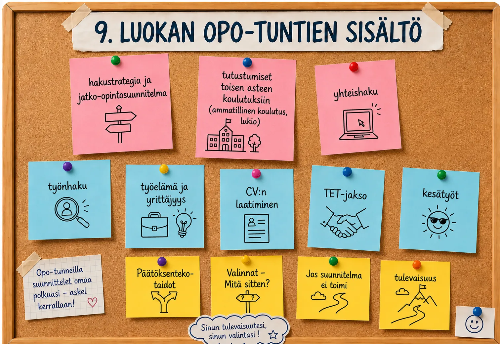
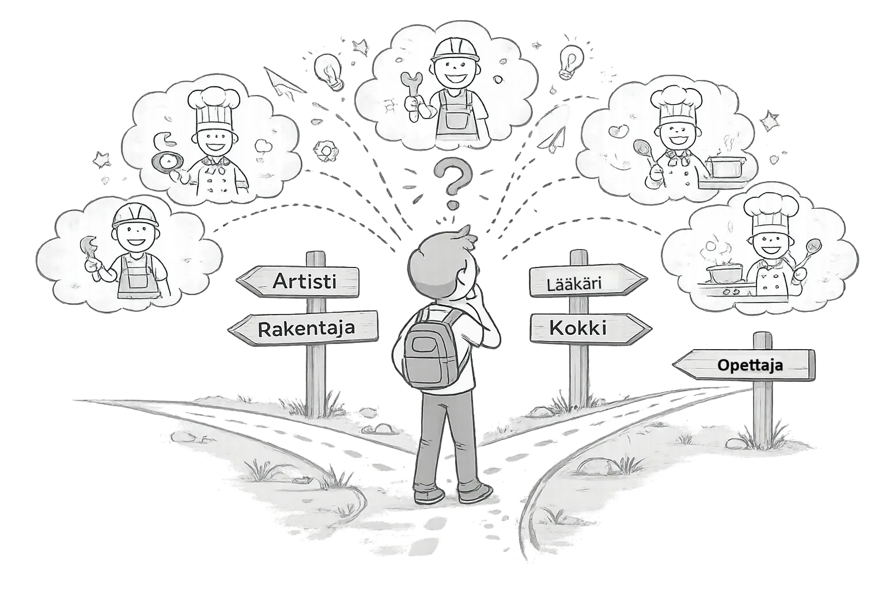
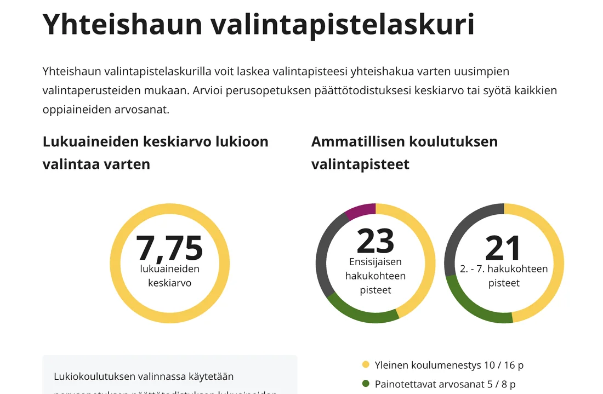
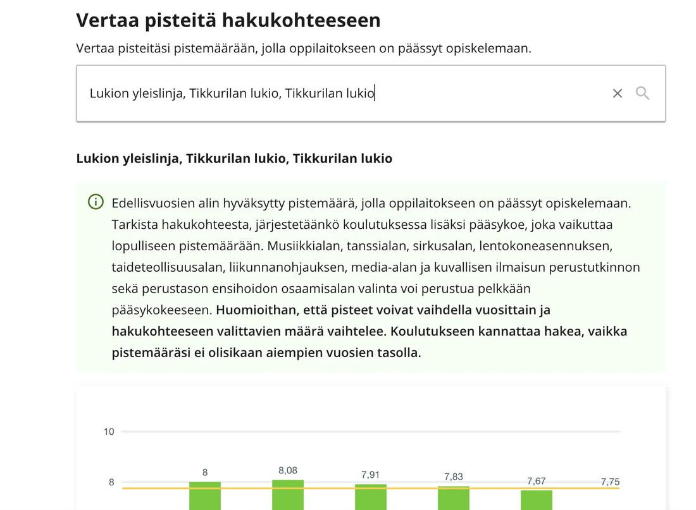
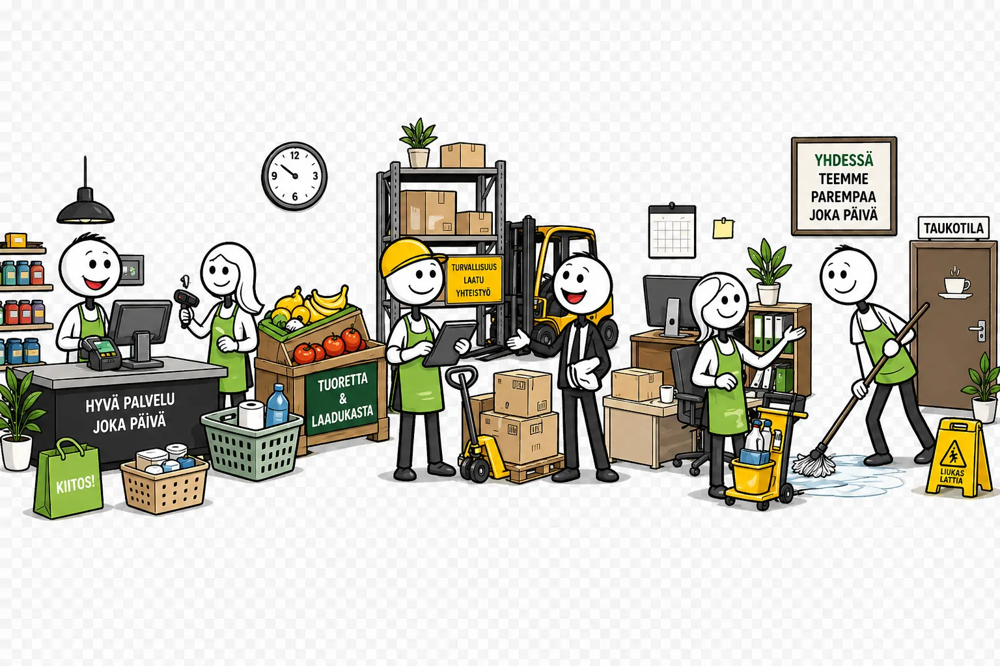
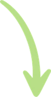
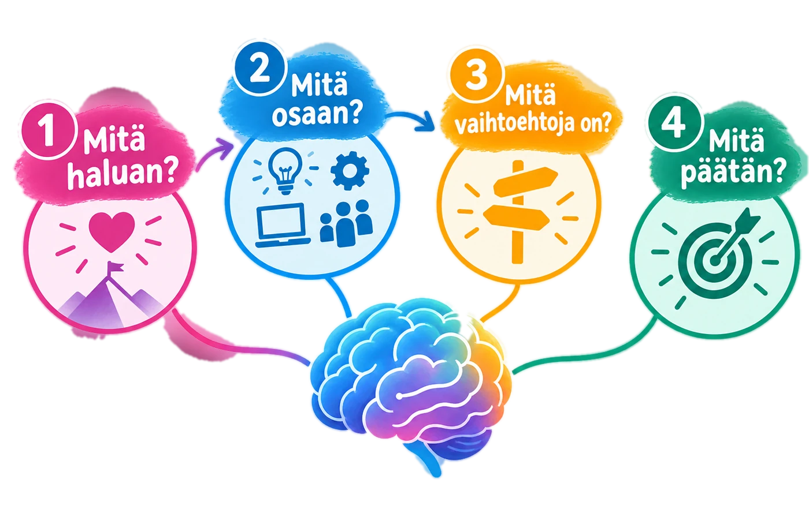
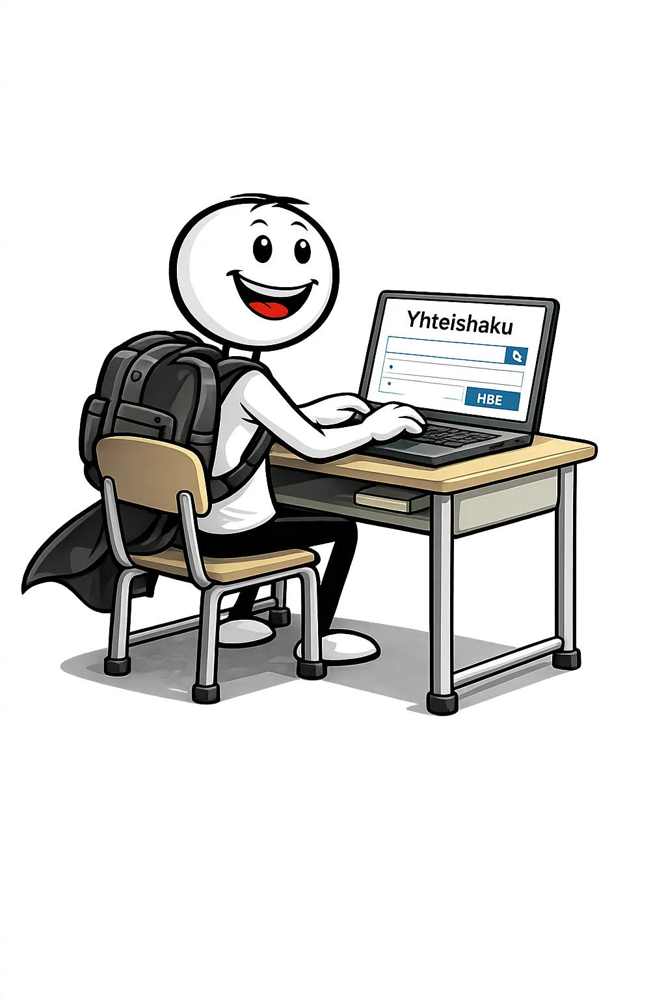
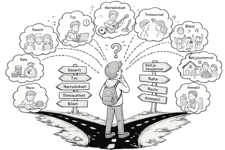

9. luokka – valintojen aika
Tänä vuonna valmistaudut yhteishakuun ja teet päätöksiä, jotka vievät sinut eteenpäin. Ei tarvitse tietää kaikkea – riittää että otat seuraavan askeleen.
Opo-tunnit 9.luokalla
Polku valintoihin – vuoden teemat
Tänä vuonna teet tärkeimmän valinnan tähän mennessä: minne peruskoulun jälkeen? Tänä vuonna rakennat strategian, harjoittelet hakemista ja opit tuntemaan itsesi paremmin — niin että valinta tuntuu omalta.

🔍 Suurenna
Rupatteluhetki 💬
Kysymyskortit tutustumiseen ja ryhmäytymiseen – juttelua tutustumisesta tulevaisuuteen
Kysymyskortit
Juttele kavereiden kanssa ja tutustukaa rennosti. Nostakaa kysymyskortteja ja vastatkaa vuorotellen – mukana myös tulevaisuus, työ ja ihmissuhteet.
Ysiluokka edessä - suunnitelma taskuun
Osion opettajan ohjeMitä 9. luokalla tapahtuu – ja miten suunnittelet oman polkusi?
Eri polkuja
Peruskoulun jälkeen voit jatkaa lukioon, ammatilliseen koulutukseen, valmentavaan koulutukseen (TUVA tai TELMA) tai kansanopistoon. Jokainen polku johtaa eteenpäin – ne vain kulkevat eri reittejä. Suomen koulutusjärjestelmä on joustava: opiskelijaksi voi palata missä tahansa elämänvaiheessa. Ei ole yhtä oikeaa tapaa.

Lukuaineet ja taito- ja taideaineet – mihin ne vaikuttavat?
9. luokan arvosanat ratkaisevat yhteishaussa. Lukuaineiden keskirvo vaikuttaa lukion pääsyyn, ja taito- ja taideaineita painotetaan ammatillisen koulutuksen valintapisteissä.
ratkaisevat lukion keskiarvon
painotetaan ammatillisen koulutksen valitapisteissä
Lähteet: Opintopolku.fi
Tutustu Opintopolkuun ja laske omat pisteesi
YksilötehtäväOpintopolku.fi on valtakunnallinen sivusto, jossa haet toisen asteen opintoihin eli teet yhteishaun. Sieltä löydät lukiot ja ammatilliset alat, viime vuosien pisterajat ja laskurin, jolla arvioit omat pisteesi.
- Avaa Opintopolun valintapistelaskuri alla olevasta napista.
- Syötä lukuaineiden arvosanasi tai koko keskiarvosi.
- Katso kaksi lukua: keskiarvo lukioon ja valintapisteet ammatilliseen.
- Kokeile ”Vertaa pisteitä hakukohteeseen” – hae oma toiveesi ja katso viime vuoden alin pistemäärä.
- Kirjaa oma keskiarvosi ja pistemääräsi ylös vihkoon.
Kirjaa tulos itsellesi
Laske omat pisteesi Opintopolussa
Opintopolun virallinen valintapistelaskuri kertoo lukuaineiden keskiarvosi lukioon ja valintapisteesi ammatilliseen koulutukseen. Laskuri aukeaa uuteen välilehteen.
Avaa laskuri Opintopolussa

Rakenna oma lukuvuosisuunnitelma
YksilötehtäväAvaa vuosikello ja täydennä se omilla tapahtumillasi. Kalenteri tallentuu automaattisesti, joten voit palata siihen milloin tahansa.
- Lisää koulusi TET-jakson ajankohta.
- Merkitse yhteishaun tärkeät päivämäärät.
- Lisää omat muistutuksesi ja tapahtumasi.
kalenteri jää talteen
Tee oma vuosikello
Merkitse kaikki 9. luokan tärkeät tapahtumat omaan kalenteriisi – koulun tapahtumat, TET-jakso, yhteishaku ja omat muistutuksesi.
Ajattelun taidot – oma pää käyttöön
Osion opettajan ohjeKäytä omia aivojasi monipuolisesti – viisi ajattelutapaa, ryhmäpäättely ja tekoälyn kriittinen käyttö
Tunne kaikki viisi — löydä oma vahvuutesi.
AI-laboratorio
9. luokkaRobo vie sinut tekoälyn maailmaan: miten tekoäly vaikuttaa ammatteihin, mikä on suodatinkupla ja miten tunnistat disinformaation. Samalla huomaat, mitkä taidot pysyvät ihmisen ominaisuutena — ja miksi omat aivosi ovat yhä paras työkalusi.
🕵️ Salapoliisitehtävä — Kadonnut kultainen kello
Professori Virtasen kultainen taskukello on varastettu museosta. Epäiltyjä on neljä. Jokainen ryhmänjäsen saa omat vihjekorttinsa — selvittäkää yhdessä kuka teki sen, miten ja miksi.
Duuniin! – työelämä tutuksi
Osion opettajan ohjeMitä työelämä oikeasti on – ja mitä se kertoo sinusta?
9. luokan TET on erityinen. Se voi vahvistaa tai muuttaa ajatuksiasi tulevaisuudesta. Molemmat ovat hyvä lopputulos.
Kokemus ei mene hukkaan – se auttaa valitsemaan.


Näin TET-harjoittelu etenee – klikkaa vaihetta nähdäksesi lisätietoja:
1. Koulu antaa työsopimuslomakkeen
Ennen TET-harjoittelua oppilas saa opolta tyhjän työsopimuslomakkeen. Lomake on virallinen asiakirja, joka pitää toimittaa tulevalle TET-työpaikalle.
📋 Pidä lomake tallessa ja siistinä!
2. Oppilas käy kysymässä TET-paikkaa
Oppilas menee lomakkeen kanssa haluamiinsa työpaikkoihin ja kysyy: „Voinko päästä teille TETtiin?"
- Jos vastaus on kyllä → siirry seuraavaan vaiheeseen
- Jos vastaus on ei → kokeile seuraavaa työpaikkaa
💡 Älä lannistu – useimmat löytävät paikan muutaman yrityksen jälkeen!
3. Työnantaja täyttää lomakkeen
Kun työnantaja suostuu, hän täyttää työsopimuslomakkeen ja allekirjoittaa sen. Oppilas saa täytetyn lomakkeen itselleen.
Oppilas vie lomakkeen opolle mahdollisimman pian.
📄 Asiakirja: työsopimuslomake (täytetty) → toimitetaan opolle
4. Opo säilyttää – ja palauttaa ennen TETiä
Opo ottaa sopimuksen talteen ja tarkistaa sen. Vähän ennen TET-viikon alkua opo antaa sopimuksen oppilaalle takaisin.
Tarvittaessa opo antaa myös matkaliput TET-paikkaan kulkemista varten.
🎫 Muista: kysy opolta matkaliput jos tarvitset!
5. TET-harjoitteluviikko
Oppilas menee TET-paikkaan työsopimuksen ja mahdollisten matkalippujen kanssa. Harjoittelu alkaa!
💼 Tee töitä ahkerasti, ole ajoissa ja käyttäydy asiallisesti.
6. Työtodistus opolle
TET-harjoittelun päätyttyä työnantaja kirjoittaa oppilaalle työtodistuksen. Oppilas toimittaa työtodistuksen opolle.
🏅 TET-harjoittelu on nyt suoritettu – hienoa työtä!
📨 Ota yhteyttä työnantajaan
Harjoittele TET-paikan hakemista. Täytä tiedot — saat valmiin viestin, jonka voit lähettää tai muokata.

Duuniin! Opas työelämään.
Harjoittele oikeita tilanteita ennen TET-harjoittelua.

Vihreää valoa
Käy läpi muistilistan asiat ja ota starttilupa ennen TET-jaksoa.
TET-jakson jälkeen – mitä opit?
Käy TET-jakso läpi ja pohdi, mitä kokemus kertoo sinusta ja tulevaisuudestasi.
Miten minä opin?
TET-jakso ei opeta vain työelämästä — se kertoo myös siitä, miten sinä opit. Pohdi hetki, miten parhaiten opit uusia asioita.
DuuniMinä
DuuniMinä ei arvioi sinua – se näyttää, missä olet luontaisesti vahva. Tee testi ja katso, millä alalla vahvuutesi loistavat.
Pakkaa vahvuudet reppuusi – tee oma CV
Kokoat tähän kaikki vahvuutesi 7. ja 8. luokalta – ja valmistat ensimmäisen oman CV:si.
Päätöksentekotaitoja
Osion opettajan ohjeMiten tehdä hyviä päätöksiä — myös vaikeiden valintojen edessä?
Tieteellinen tausta
Päätöksentekoa on tutkittu laajasti kognitiivisessa psykologiassa. Daniel Kahneman (Nobel 2002) osoitti, että ihmisillä on kaksi ajattelujärjestelmää: nopea, automaattinen (tunne, vaisto) ja hidas, harkitseva (analyysi, järki). Hyvä päätöksenteko vaatii molempia.
Nuorten päätöksentekoon vaikuttaa erityisesti sosiaalinen paine — vertaisryhmän mielipide painaa usein enemmän kuin oma harkinta. Tämä on kehitysvaiheeseen liittyvä normaali ilmiö, ei heikkous.
Päätöksentekomalli puolesta / vastaan / en tiedä / miltä tuntuu pohjautuu kognitiiviseen käyttäytymisterapiaan (KKT) ja ns. PMI-menetelmään (Plus / Minus / Interesting), jonka kehitti Edward de Bono.
Lähteet
- Kahneman, D. (2011). Thinking, Fast and Slow. Farrar, Straus and Giroux.
- De Bono, E. (1985). Six Thinking Hats. Little, Brown.
- OPH – Opinto-ohjauksen perusteet

Päätöksenteko on taito
Isot valinnat — kuten mitä kouluun hakea — voivat tuntua vaikeilta. Kukaan ei tiedä etukäteen, mikä on oikea valinta.
Hyvä päätös ei tarkoita, että olet varma. Se tarkoittaa, että olet miettinyt asiaa usealta kantilta. Tällä tunnilla harjoittelet sitä — neuvomalla fiktiivistä henkilöä.
Vaisto ja tunne. Vastaa heti — "tältä tämä tuntuu".
Harkinta ja järki. Miettii rauhassa monelta kantilta.
Hyvä päätös käyttää molempia.
Neuvonantaja — päätöksentekoa yhdessä
Tässä tehtävässä harjoittelet päätöksentekoa — ei omalla valinnallasi vaan neuvomalla fiktiivistä henkilöä. Sama taito auttaa kaikissa elämän isoissa valinnoissa.
Valitse oma skenaariosi
Kaksi tilannetta — valitse se, joka tuntuu sinulle läheisemmältä. Pohdi, mitä tekisit ja miksi. Kukaan muu ei näe valintaasi.
Mitä hyvä päätös vaatii?
Ei avata kenenkään yksittäisiä valintoja. Katso kristallipalloon ja keskustelkaa siitä, mitä päätöksenteko itsessään vaatii.
Katso tulevaisuuteen — klikkaa palloa.
Hakeminen käytännössä
Yhteishaku tehdään Opintopolku-palvelussa. Voit laittaa useita hakukohteita tärkeysjärjestykseen. Mieti etukäteen: varma, realistinen ja unelma.
Hakemista voi muuttaa hakuajan sisällä.

Paikka, johon tiedät pääseväsi.
Paikka, joka sopii taitoihisi ja arvosanoihisi.
Paikka, johon haluaisit eniten.
Miten tehtävä toimii?
Tehtävä on jaettu kahteen osaan. Tee ensin Osa 1 tunnilla ja palauta se opolle. Palaa Osaan 2 sen jälkeen, kun olet käynyt tutustumassa – esimerkiksi Avoimilla Ovilla.
Vastauksesi tallentuvat automaattisesti selaimeen, joten voit jatkaa myöhemmin.
Hakustrategia – suunnittele oma reittisi
Tieteellinen tausta
Tutkimukset osoittavat, että strukturoitu suunnittelu parantaa merkittävästi tavoitteiden saavuttamista. Kun nuori kirjaa konkreettisia hakukohteita ja perustelee valintansa, päätöksenteosta tulee tietoisempaa ja vähemmän impulsiivista (Oyserman ym., 2006).
Kolmen vaihtoehdon strategia (varma, realistinen, unelma) perustuu tavoitteenasettelun teoriaan: realistinen optimismi kannustaa yrittämään enemmän kuin pelkkä "turvavalinta", mutta suojaa myös täydeltä pettymykseltä (Bandura, 1997).
Oppilaan omaa hakusuunnitelmaa on tutkittu tärkeäksi toimijuuden kokemuksen rakentajana: nuoret, jotka kokevat valinnan olevan omaehtoinen, sitoutuvat opiskeluun paremmin kuin ne, joille polku tuntuu ulkoa annetulta (Ryan & Deci, 2000).
Mieti kiinnostuksiasi, tutki hakukohteita ja tee oma hakusuunnitelma. Tehtävä ohjaa sinut vaihe vaiheelta.
Hyvä suunnitelma sisältää myös varasuunnitelman. Ketään ei haittaa miettiä etukäteen, mitä tehdä, jos asiat eivät mene kuten toivoi.
Mitä jos suunnitelma ei toimi?
Osion opettajan ohjeEpävarmuus kuuluu elämään — harjoitellaan sen kohtaamista.
Kartta epävarmuuteen
Ensin tunnistetaan, miltä epävarmuus tuntuu — ja mitä sinulla on jo käytössä sen kohtaamiseen.
Kaksi polkua — sama tavoite
Luetaan kaksi lyhyttä tarinaa. Molemmilla on sama haave, mutta eri lähtökohdat. Pohditaan yhdessä, mitä se tarkoittaa.
Kaikkien lähtökohdat eivät ole samat — ja se ei johdu ihmisistä itsestään. Perhe, asuinpaikka, kieli, raha ja verkostot vaikuttavat siihen, mitä polkuja tuntuu mahdolliselta valita. Tätä kutsutaan rakenteiksi.
Oma resilienssipakki
Resilienssi tarkoittaa kykyä selviytyä ja jatkaa eteenpäin, vaikka asiat eivät mene suunnitelman mukaan. Kootaan sinulle oma "pakki" — keinoja ja ihmisiä, joihin voit turvautua.
Näkymättömät askelmat
Jotkut asiat helpottavat elämää ja valintoja — vaikka niitä ei aina huomaa. Ne eivät ole ansaittuja eivätkä hankittuja. Ne vain ovat siellä. Tässä tehtävässä tutkit omia lähtökohtasi.
Seuraava askel — oletko valmis?
Osion opettajan ohjeSanastoa, tehtäviä ja varmuutta seuraavaan vaiheeseen
Lue termit läpi. Sanat näkyvät myöhemmin tehtävissä ja peleissä.
Lukio
- Opintopiste
- Kertoo, kuinka laaja opintojakso on. Lukiossa suoritat yhteensä vähintään 150 opintopistettä.
- Opintojakso
- Yksi lukion opintokokonaisuus, esimerkiksi biologian tai äidinkielen jakso. Siitä saat opintopisteitä.
- Jakso
- Lukuvuoden osa, joka kestää noin 5–6 viikkoa. Jakson aikana opiskelet tiettyjä opintojaksoja.
- A- ja B-kieli
- A-kieli on pitkä kieli, jonka opiskelu on alkanut peruskoulussa. B3-kieli on valinnainen kieli, jonka voit aloittaa vasta lukiossa.
- Pitkä ja lyhyt oppimäärä
- Matematiikassa valitset pitkän tai lyhyen oppimäärän. Valinta voi vaikuttaa jatko-opintoihin.
- YO-koe
- Ylioppilastutkinnon koe. Kirjoitat yo-kokeet yleensä lukion loppupuolella.
Amis
- Oppisopimus
- Opiskelet työpaikalla työsuhteessa ja saat palkkaa.
- Koulutussopimus
- Opiskelet työpaikalla, mutta et ole työsuhteessa etkä saa palkkaa.
- Näyttö
- Näytät osaamisesi oikeissa työtehtävissä. Se ei ole kirjallinen koe.
- Tutkinnon osa
- Yksi osa tutkintoa, esimerkiksi asiakaspalvelu.
- Osaamispiste
- Kertoo, kuinka laaja ammatillinen opintokokonaisuus on.
- HOKS
- Oma suunnitelma siitä, mitä opiskelet ja miten.
Tämä on seikkailu koulussa. Ryhmänne etsii kolme rastia vihjeiden avulla. Jokaisella rastilla otatte yhden tehtäväkortin ja teette sen heti paikan päällä. Tehtävät liittyvät omaan polkuunne. Kukaan ei ole yksin, koska samat asiat toistuvat monella.
Näin peli etenee
- Opettaja jakaa luokan 4–5 hengen ryhmiin.
- Valitkaa ryhmästä aikavahti ja kirjuri. Aikavahti seuraa aikaa. Kirjuri kerää kortit ja palauttaa ne opettajalle.
- Saatte opettajalta vihjeen. Se johtaa kolmelle rastille: suoralle, risteykseen ja umpikujaan.
- Ratkaiskaa vihje yhdessä ja kävelkää paikkaan. Voitte mennä rasteille siinä järjestyksessä kuin haluatte, kunhan ratkaisette vihjeet.
- Rastilla on yhtä monta kirjekuorta kuin on ryhmiä. Ottakaa yksi kirjekuori, avatkaa se ja tehkää kortin tehtävä heti paikan päällä (noin 6 min). Ottakaa suoritettu tehtäväkortti mukaan.
- Kun olette käyneet kaikilla kolmella rastilla, palatkaa luokkaan. Kirjuri antaa kolme suoritettua tehtävää opettajalle.
Pelisäännöt
- Kävelemme, emme juokse. Puhumme hiljaa, koska muissa luokissa on oppitunnit menossa.
- Kunnioitamme toisiamme ja kuuntelemme. Emme selitä emmekä arvostele toisen valintoja.
- Saat sanoa "ohitan". Sinun ei tarvitse kertoa mitään, mitä et halua.
- Otamme vain yhden kirjekuoren per rasti, jotta kaikille ryhmille riittää.
👥 Ryhmäkoko: 4–5 | 📍 Koulun käytävät tai piha
Opettajan ohje: Elämänpolku-kävelyValinnat ratkaisee
Osion opettajan ohjeTeemme kaikki erilaisia valintoja — oikeita ja vääriä, ne kuuluvat elämään. Tässä pelissä harjoittelet valintojen tekemistä.
Rohkeus valita on jo puolet matkasta.

Mitä sitten?
Tee valintoja koulussa, kaveripiirissä ja kotona. Katso lopussa mihin suuntaan olet menossa.
Analysoi pelin kolme merkittävintä valintaa: Mitä valitsit? Miksi? Mitä olisit menettänyt toisella valinnalla? Pohdi lopuksi — onko sinulla elämässä "oletusvalinta", johon päädyt miettimättä? Mistä se tulee?
 Rohkeimmat valinnat tehdään yleensä silloin, kun tiedät miksi valitset — ei vain mitä
Rohkeimmat valinnat tehdään yleensä silloin, kun tiedät miksi valitset — ei vain mitä
Tulevaisuus ei ole vain jotain, mitä tapahtuu sinulle — se on jotain, jonka voit itse rakentaa.
Kukaan ei tiedä tarkkaan, millainen maailma on kymmenen vuoden päästä. Mutta voit miettiä, millainen sinä haluat olla — ja mitä voit tehdä jo nyt.
Tällä oppitunnilla tutkit omaa tulevaisuuttasi kolmesta suunnasta.
Yksilötehtävä
Tulevaisuudesta voi ajatella kolmella tavalla:
- Todennäköinen tulevaisuus — mikä menee niin kuin asiat yleensä menevät
- Toivottava tulevaisuus — mitä sinä toivoisit tapahtuvan
- Villimpi tulevaisuus — yllättävä, mutta silti mahdollinen
Kirjoita jokaiseen korttiin lyhyesti: Missä olet? Mitä teet? Miltä se tuntuu?
🎯 Todennäköinen minä — viiden vuoden päästä
Asiat menevät suunnilleen niin kuin ne ovat menossa. Missä olet?
⭐ Toivottava minä — viiden vuoden päästä
Jos kaikki sujuisi hyvin ja saisit itse valita — mitä haluaisit?
🌀 Villimpi minä — viiden vuoden päästä
Jotain yllättävää tapahtui. Missä voisit olla — vaikka se tuntuisi epätodennäköiseltä?
🤔 Mieti lopuksi: Mikä näistä kolmesta tuntuu sinulle tärkeimmältä — ja miksi? Ja kuka voisi kulkea kanssasi tai auttaa sinua matkalla sinne?
🌍 Maailma tarvitsee sinua
Tulevaisuus ei ole vain sinua varten. Mieti kahta asiaa:
Yksilö- tai ryhmätehtävän kanssa
Alla on kortteja. Klikkaa jokaista korttia ja päätä: kuuluuko se asioihin, joihin voin vaikuttaa — vai asioihin, joihin en juuri voi vaikuttaa?
Voit muuttaa mieltäsi klikkaamalla uudelleen.
✅ Tähän voin vaikuttaa
🌍 Tähän en juuri voi vaikuttaa
🤔 Pohdintakysymys: Oliko jokin väittämä yllättävä? Mikä asia kuuluu mielestäsi sinulle — vaikka se tuntuu vaikealta?
Yksilötehtävä
Ihmisillä on erilaisia tapoja suhtautua tulevaisuuteen. Katsotaan ensin neljä tyyppiä:
En mieti asiaa — katsotaan sitten kun on pakko.
Reagoin vasta sitten, kun jokin pakottaa toimimaan.
Valmistaudun etukäteen — kerään tietoa ja suunnittelen.
Toimin suunnitelmallisesti jo ennen kuin ongelma syntyy.
Lue neljä tilannetta ja valitse jokaiseen se vaihtoehto, joka sopii sinuun parhaiten. Ei ole oikeita tai vääriä vastauksia — tärkeintä on tunnistaa oma tapa toimia.
🌟 Yhteinen hetki
Koko luokkaHaluatko jakaa jonkin ajatuksen? Kerro luokalle yksi asia, jonka opit itsestäsi näiden tehtävien aikana.
Ei ole pakko — mutta mielipiteesi on arvokas.
Kiitollisuus
YksilötehtäväNyt olet 9. luokan lopussa. Pian peruskoulu loppuu ja edessä on uusi vaihe. Ehkä jännittää, ehkä helpottaa — kaikki tunteet ovat sallittuja.
Yhtä asiaa kannattaa muistaa: kukaan ei ole tullut tähän yksin. Moni on auttanut sinua matkan varrella. Pysähdy hetkeksi miettimään.
Jos haluat, voit kertoa sen jollekulle heistä — tai kiittää häntä.